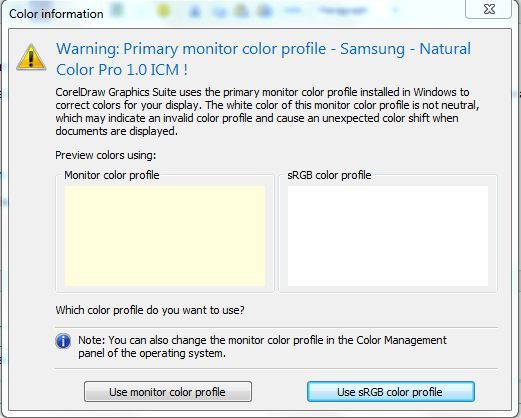

Отображение белого бледножёлтым в CorelDRAW X5. Как убрать?
vertus / 03.04.2010, 17:30/00:41
Форум:
Белый цвет в x5, почему-то отображается жёлтым. При экспорте всё ок. Я читал, что там новая система отображения цветов. Может, кому-то оно и удобно, а мне - нет. Как сделать так, чтоб белый цвет отображался на экране таким, какой он будет при экспорте и, вообще-то, при печати???
Переустанови Corel
Угу. Для таких, как я, сообщу, что в первый раз CorelDRAW X5 спрашивает, какой профиль выбрать - вот там и выбираешь, жёлтенький или беленький.
vertus, выложите скриншоты настроек цвета (глобальные и документа). А так же докера Proof Colors и собственно самой проблемы. Без них не о чем говорить.
и всё больше не спрашивает. Я не нашёл как это поменять. Я в системных настройках это дело поправил (win7)
решение тут http://192.210.65.84/forums/p/19513/87478.aspx#87478
нужно нажать F8 перед запуском корела. 8-)
я так наконец то вылечил желтизну.
теперь наконец то все белое и вставляемые картинки тоже с белым фоном!
Добавлено (15.05.2010, 01:44)
---------------------------------------------
F8 скидывает настройки по умолчанию и вызывает опять такое окошко:

Честно говоря в системное управление цветом вообще не стоит лезть, а уж тем более подсовывать профили монитора которые были на диске.
Sancho, умничать я тоже умею.
я лазил неделю в color management в кореле. так и не смог номально настроить.
а тут в два тыка все решилось. кому надо тот найдет это решение по F8
F8 и вы безвозвратно уничтожите все настройки, особенно расположения кнопок и панелей. Так что этот выход только для тех не задумывается об удобстве работы.
Если кто не понял, то вот тема была.
Black тебя кто то заставляет сбрасывать настройки??
я себе ничего не настраивал ибо сразу после установки невозможно работать. вместо работы искал решение - и нашел. F8
да сбрасывает. но как можно работать в кореле даже когда при обычной вставке картинок они вставляются с желтым фоном.
но даже если настроены профили - у меня даже на печать выводилось с желтизной. (т.е. на мониторе белый фон - а на принтере печатает желтый). в итоге я нашел настройки где это меняется в кореле. я до этого был на Х3 - и никакого геморроя не было. запустил и работай не мучайся с цветами. а в Х5 надо все настраивать.
a2019, зачем так резко всё воспринимать, то? :D
А настраивать нужно всё и всегда. :)
Кстати говоря, много скрытых настроек можно накапать в реестре и в профиле корела.
Страницы